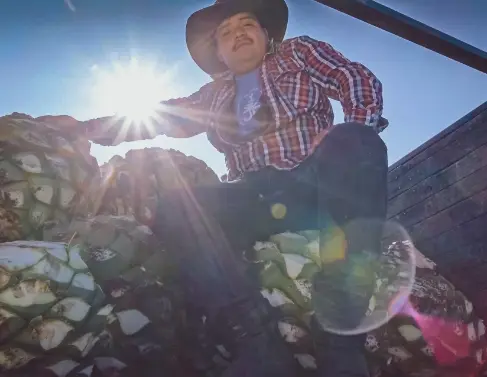

To those who are waiting,
We are writing about a spirit you cannot taste yet, and one we think about most days.
It began on the morning of the twenty-fifth of October, 2022. Before eight, in the fields of Benito Ruiz and his son Francisco, about a hundred and fifty espadín agave were cut by hand, finished before the afternoon sun.
Then fire. A pit oven lit before dawn, covered in volcanic stone, four days of slow heat. When the soil came off, the night had cooled to forty-six degrees and the agave was the color of caramel.
A horse named Isabella walked the tahona with Israel for four hours. Then seven days of wild fermentation in the cold, while marigold and cockscomb dressed every altar nearby. It was the week of Día de los Muertos, and the yeast knew it.
On the ninth and the twenty-third of November, copper stills, sealed with clay and fired with wood. After the second, the spirit passed fifty-three percent.
And then, in December, we did something most mezcal never gets to do. We set part of it apart and laid it in California oak.
It is resting there tonight. We expect oak, vanilla, dried fruit and a whisper of smoke. We do not release it on a schedule. The barrel decides.
It will release once, by invitation. If you would like to be among the first to know, leave your name.

25 Oct · the harvest the oven
the oven marigold & cockscomb
marigold & cockscomb first run
first run